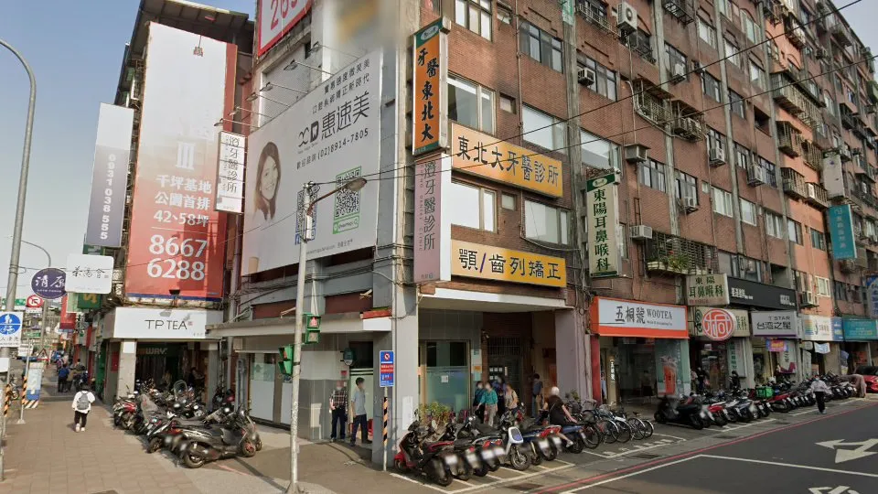
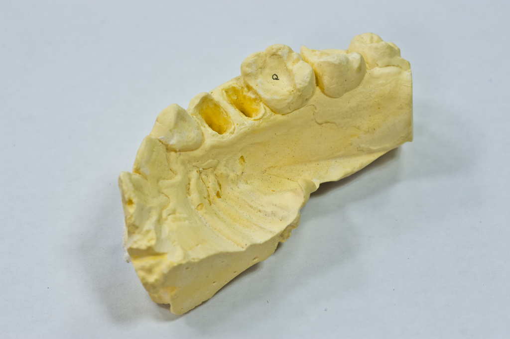

上午 09:00–12:00
下午 14:00–17:00
晚上 18:30–21:00
以 Best Doctor 頁面為基礎，整合網路公開資料，做成就醫資訊整理型圖文 HTML PPT。

診所門面辨識圖MyDentist 資料稱由洪澄祥院長創立於 1982 年，屬長年營運型診所。
Best Doctor / MyDentist / PPI 等來源均可見約 4.1 的網路評分資料。
Best Doctor 頁面提到洪澄祥醫師累積三千以上顎齒矯正案例。
註：網路評分與評論數會變動，簡報僅整理公開頁面資訊，實際以 Google/診所最新資訊為準。
多個公開來源顯示地址位於北新路三段 158 號；PPI、台灣牙科網等來源補充為 3 樓。
Best Doctor / Taiwan Dental 顯示：02-2918-3991。
PPI / Right Time 等來源出現：02-2914-6761。
網路資料有不同電話與地址細節版本；正式掛號、門診異動與樓層資訊，建議以電話確認為準。
上午 09:00–12:00
下午 14:00–17:00
晚上 18:30–21:00
上午 08:30–12:00
下午與晚上多數來源顯示休診。
休診。
國定假日或臨時異動請以診所公告/電話確認。
時段來源：MyDentist、PPI、Taiwan Dental 等公開頁面整理。
Best Doctor 頁面提到洪澄祥醫師專注顎齒矯正，並描述非手術矯正方法的研究與臨床經驗。
Best Doctor 醫師介紹區出現「牙齒矯正 / 隱形矯正」相關標籤。
Best Doctor 與中華黃頁資料可見根管治療相關內容；台灣牙科網亦列於新店根管治療推薦清單中。
醫療選擇需由醫師評估；本頁不作療效保證。
Best Doctor 頁面提及林正弘院長，並介紹洪澄祥醫師；MyDentist 則描述東北大牙醫由洪澄祥院長創立，重視牙材、儀器、品質控管與醫病關係。
網路資料中與顎齒矯正、東北大牙醫口腔醫療集團總院長等敘述相連。
Best Doctor 頁面列為東北大牙醫診所院長。

齒模/矯正輔助視覺一般牙科、矯正諮詢、根管治療、假牙或第二意見？
若為矯正或複雜治療，建議先確認醫師門診時段。
詢問診斷、療程、費用、替代方案與可能風險。
平日晚間有門診，週六僅上午；需評估回診頻率。
4.1 分與百則以上評論具參考性，但仍應看近期評論與個人需求。
確認地址、樓層、醫師、時段與是否需預約。
攜帶過往 X 光、治療紀錄或目前不適說明。
了解治療選項、費用、時間、風險與後續照護。
診所名稱、新店區、北新路三段 158 號、牙科一般診所、平日三診。
電話版本、完整樓層、最新門診、是否可線上預約、指定醫師時段。
這類診所資料頁常由第三方網站整理，適合初步參考，不適合取代官方確認。
統一電話、地址、樓層、醫師介紹、治療項目與預約方式。
定期更新門診時間、照片、公告與評論回覆。
將矯正、根管、一般牙科等專長分頁整理。
用圖文解釋矯正流程、根管治療、回診照護。
初診需帶什麼、是否需拍 X 光、費用如何估、多久回診。
東北大牙醫在網路上呈現的關鍵印象，是「新店老字號、矯正經驗、平日晚間可看診」；但患者預約前仍應確認最新門診與醫師時段。
這份簡報適合作為就醫前的資訊整理，不是醫療建議，也不替任何治療成效背書。
資料來源：Best Doctor、MyDentist、PPI 全國醫療網、Taiwan Dental、Right Time、中華黃頁等公開頁面；整理設計：文文。
每份簡報底部都有五個固定按鍵。按鍵會顯示「符號 + 中文小字」，手機與桌面都可以直接點選。
回到前一張投影片。
前往下一張投影片。
打開全部投影片目錄。
顯示本頁重點摘要。
切換沉浸/專注模式。